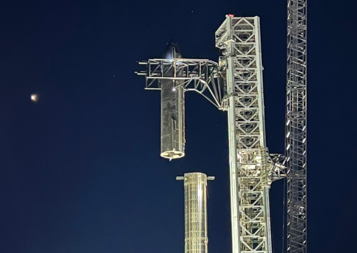
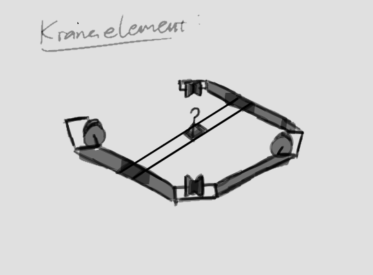
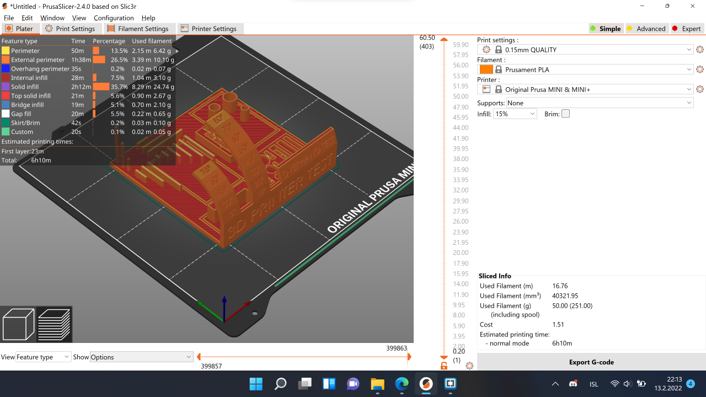
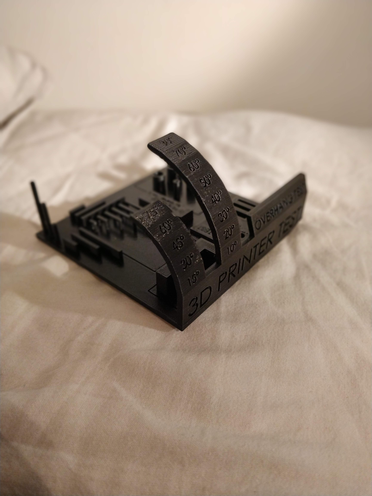
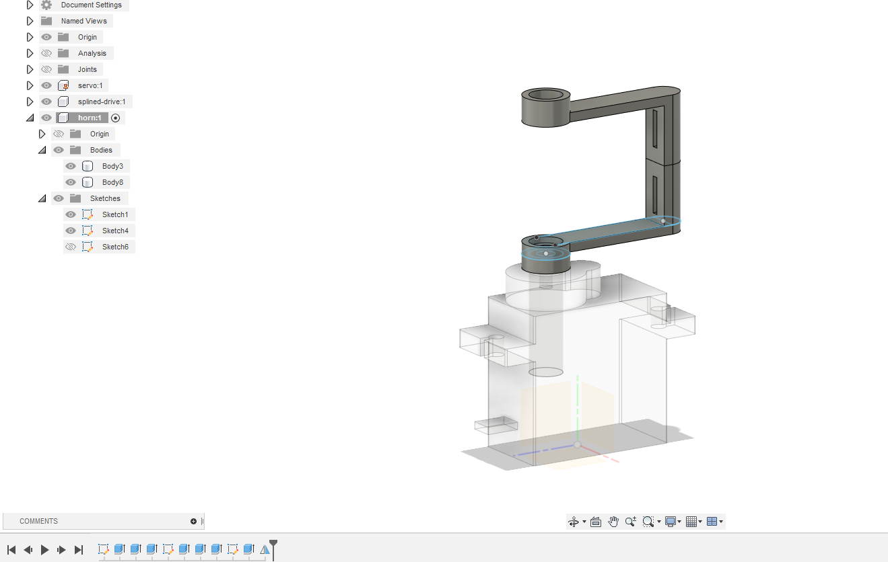
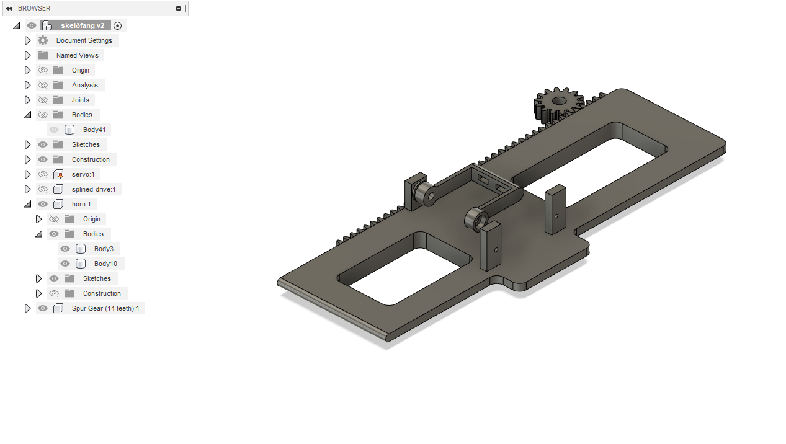

Í þessu verkefni er einn af grundvallarþáttum Súpu-vélmennisins settur í framleiðslu. Þetta er mitt tækifæri til að sameina tvö verkefni í eitt en Súpu-vélmennið er mjög umfangsmikið verkefni og tíminn naumur.

Ég hef ákveðið héðan í frá að skipta þessum greinum í kafla eftir þeim dagsetningum sem ég vann í verkefnunum.
13.2.2022Hugmyndin mín var gerð fyrir soltlu síðan og fjallaði ég um hana í greininni um Súpu-vélmennið. Hún er cirka svona: Kranaelement er fest utan um turn og færist upp og niður með kaðal sem er stýrður af mótori neðst í turninum.

Líklegast mun einhvers konar breyting verða á þessu en taka þarf tillit til þess hversu stór leikvöllurinn minn er. Samkvæmt verkefnaseðli má ég mest nota 100g af plasti í prentaða hlutinn. Stærsti prentarinn sem fablab býður upp á (Creality CR-10 MAX) hefur 450 x 450 x 470 mm svæði til að prenta á en þessi hlutur nær líklega ekki út fyrir þann ramma.Verkefnaseðill krefst þess að maður 3D skanni hlut með myndavél, færi myndir í þrívítt líkan og prenti það út. Loks fylgir eitt hópaverkefni þar sem hönnunar reglur/mörk eru ákvörðuð. Þetta þarf að gera áður en kranaelementið er sett í framleiðslu svo ég get gengið úr skugga um að hluturinn falli ekki saman í prentferlinu.Ég er búinn að hala niður Prusa Slicer og setti í það 3d printer test líkan sem ég fann á netinu.

Planið er að fara með þetta í Fablab í Breiðholti á morgun.
14.2.2022Í dag fór ég í fablab og prentaði þennan meistara:
Niðurstaðan var góð. Prusa prentararnir viðrast vera mjög áreiðanlegir. Það sést hvernig áferðin bjagast pínu með auknum halla. Einnig fylgja mislangar brýr í prent-testinu og erum við hissa á því hversu vel prentaranum tekst að gera þær.

16.2.2022Í dag þarf ég að hanna mest af kranaelementinu og framleiða það. Ég er með einn servo mótor en ég þarf að breyta stykkinu á því svo hann getur fært skeið:

Ég teiknaði mótorinn ekki. Það er mjög einfalt að fara bara á google og leita 'micro servo 9g fusion 360' og þá fann ég strax þessa slóð. Málin voru öll rétt og ég gat strax byrjað að teikna.Þessi mótor kemur svo ofan á botnplötu sem getur færst fram og aftur:

Þessa teikningu er erfitt að útskýra í texta en virknin skýrist betur í greininni um Súpu-vélmennið. Það má einnig sjá tannhjól í teikningunni og tennur sem eru í hlutfalli við það. Þetta var örugglega flóknasti partur teikningarinnar og googlaði ég þá 'rack and pinion Fusion 360' og fann þetta myndband:
Ég brunaði með teikninguna beint í fablab og setti prentararnn í gang(ég notaði sömu stillingar og fyrir printer-testið nema núna gerði ég 'generate supports' -> 'everywhere'):